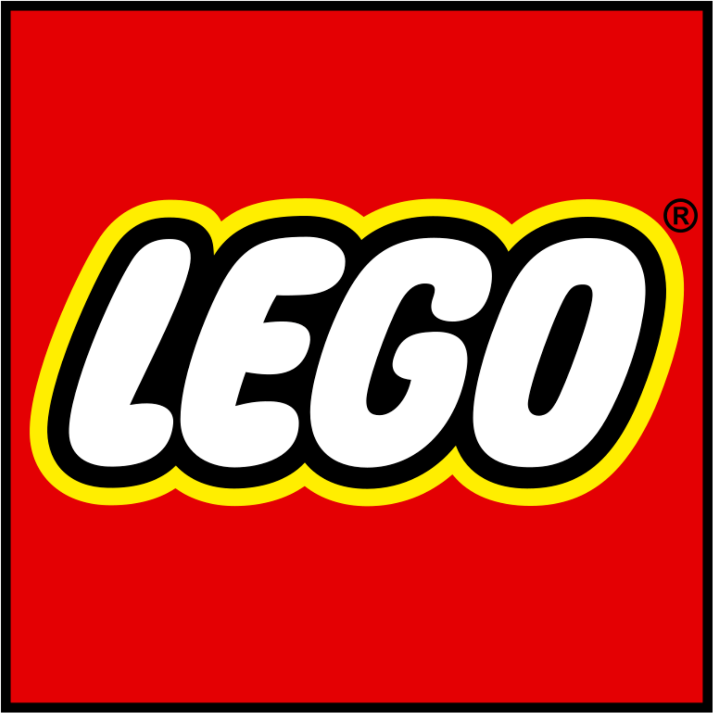
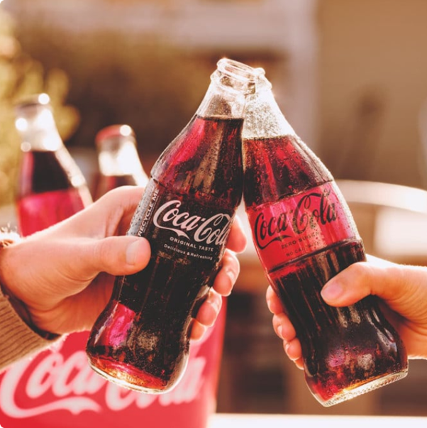

RED
The Colour of Power and Passion
Red is one of the most emotionally intense colours. It evokes strong feelings — love, passion, anger, urgency. Brands use red to demand attention, stimulate appetite, and create excitement.
Psychologically, red increases heart rate and blood pressure, making it a favourite in marketing when urgency or impulse is the goal. Think sales banners, clearance signs, or “Buy Now” buttons — red triggers quick decisions.
In branding, red communicates boldness and confidence. Brands like Coca-Cola, YouTube, Netflix, and LEGO use red to project energy, passion, and approachability.

But red can also be overwhelming if overused. It’s best used in moderation or in combination with calmer tones. In web design, red often serves as a call-to-action colour, drawing the eye quickly without overstaying its welcome.
Used well, red energizes, motivates, and ignites strong feelings — all vital in building a memorable brand presence.

What works well? What doesn't work well?